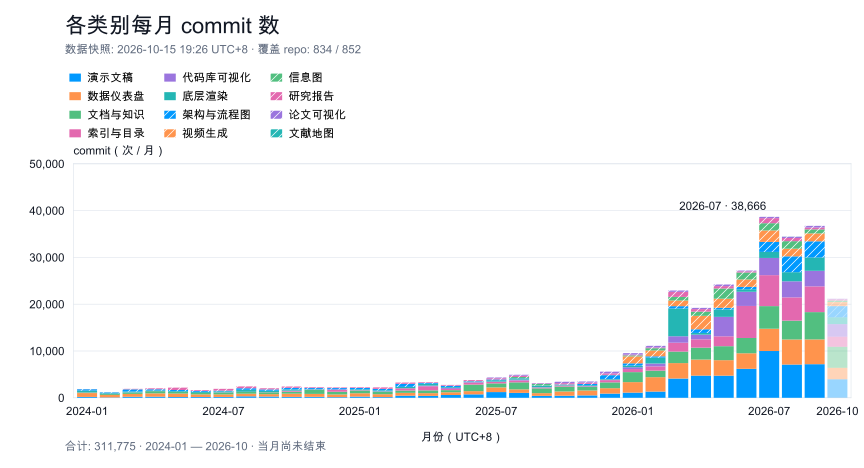
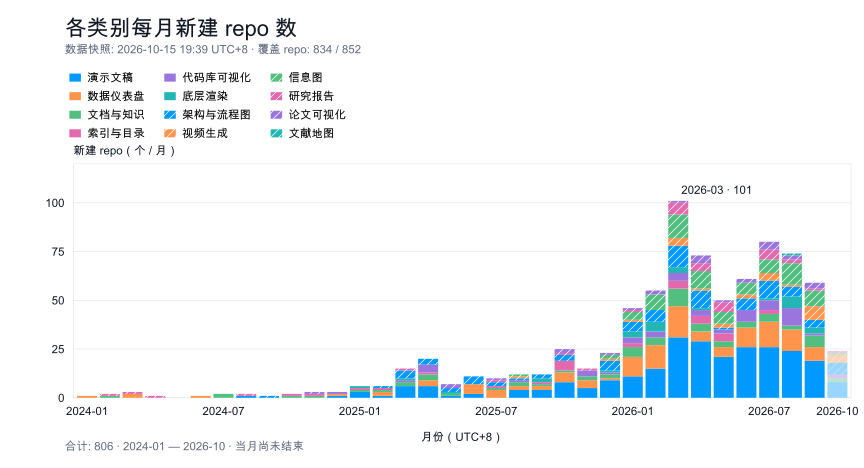

2024-01 — 2026-11
各类 repo 的开发活动
数据快照: 2026-11-01 00:11 UTC+8 · 覆盖 repo: 836 / 858 · 当月尚未结束
点击图例筛选类别；悬停或点击月份查看各类计数。
各类别每月 commit 数
下载 SVG

合计: 355,555
各类别每月新建 repo 数
下载 SVG

合计: 808
2024-01 — 2026-11
数据快照: 2026-11-01 00:11 UTC+8 · 覆盖 repo: 836 / 858 · 当月尚未结束
点击图例筛选类别；悬停或点击月份查看各类计数。

合计: 355,555

合计: 808